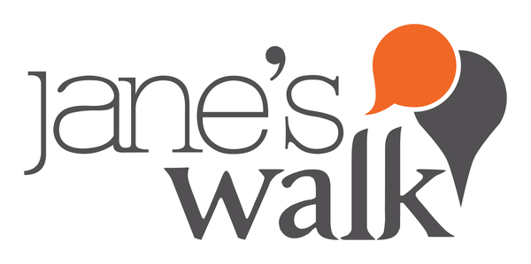
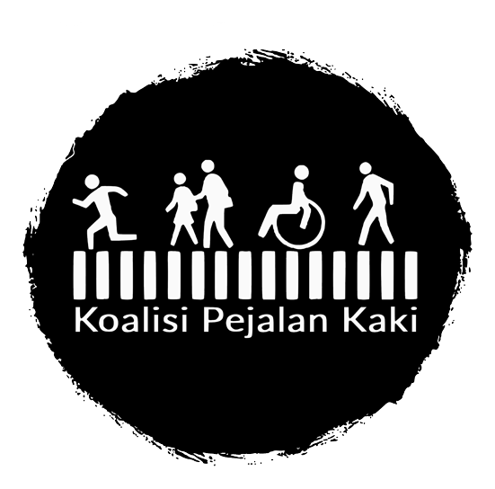
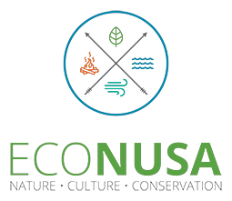
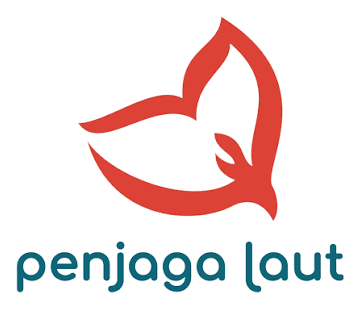
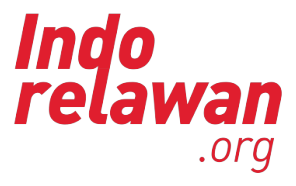
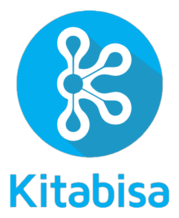

Kelana Kota
Aksi iklim kolektif berbasis jalan kaki — menurunkan emisi kota lewat perpindahan moda dan menghitung jejak hijau bersama warga.
Urban Movement · Climate · Healthy
Jejak Kota adalah gerakan akar rumput untuk ruang jalan yang adil — di mana pejalan kaki, transportasi publik, dan iklim kota diperjuangkan bersama. Voice of Movement.
01 — Profil
Komunitas yang bergerak di bidang struktur mikro pelaku ruang jalan — dari sudut pandang interaksi antara pejalan kaki dengan unsur ruang di sekitarnya, sambil memberikan dampak terhadap sisi eksternal dan internal pelakunya.
Mengurangi emisi kota dengan menggeser perjalanan pendek dari kendaraan bermotor ke jalan kaki dan transportasi publik.
Membangun tubuh yang lebih sehat dan cara pandang baru terhadap kota — ruang publik milik semua orang.
02 — Arah Aktivasi
Setiap program adalah cara berbeda untuk turun ke jalan: dari aksi iklim kolektif hingga membangun ruang publik yang inklusif dan aman.
Aksi iklim kolektif berbasis jalan kaki — menurunkan emisi kota lewat perpindahan moda dan menghitung jejak hijau bersama warga.
Mobilisasi warga kota: menjelajah, memetakan, dan mengaktifkan rute pejalan kaki serta simpul transportasi publik secara partisipatif.
Belajar dari akar rumput — riset lapangan, pengambilan sampel, dan cerita warga sebagai dasar advokasi ruang jalan.
Memperjuangkan ruang publik yang inklusif dan aman — kota untuk semua, tanpa kecuali.
03 — Dampak
04 — Kolaborator
Sebagian kolaborator terbaru kami.

Jane’s Walk The Climate Reality Project Indonesia
The Climate Reality Project Indonesia
Koalisi Pejalan Kaki Pedestrian Jogja
Pedestrian Jogja InJourney Destination
InJourney Destination Tamaris Hydro
Tamaris Hydro Citizen OS Indonesia
Citizen OS Indonesia Koalisi Perempuan Indonesia
Koalisi Perempuan Indonesia
EcoNusa
Penjaga Laut EcoDefender
EcoDefender
Indorelawan #AksiMudaJagaIklim
#AksiMudaJagaIklim
Kitabisa Ruang Ketiga
Ruang Ketiga05 — Kalkulator Emisi
Masukkan jarak tempuh, lalu bandingkan perkiraan emisi CO₂ tiap moda transportasi dengan berjalan kaki.
Ketik jarak berapa pun, atau geser untuk 0–100 km.
Catatan: angka di atas adalah estimasi dari satuan emisi yang digeneralisasi — motor bensin umum, mobil bensin umum, bis umum, dan pesawat avtur umum — dalam kilogram CO₂ per kilometer (untuk bis dan pesawat dihitung per orang). Nilai sebenarnya bisa berbeda tergantung jenis kendaraan, bahan bakar, jumlah penumpang, dan rute. Berjalan kaki dihitung 0 emisi langsung. Gunakan angka ini sebagai gambaran kasar, bukan perhitungan resmi.
Mari Kolaborasi
Kami terbuka untuk kolaborator, relawan, peneliti, dan pemerintah kota. Satu langkah dari kamu bisa jadi awal gerakan.